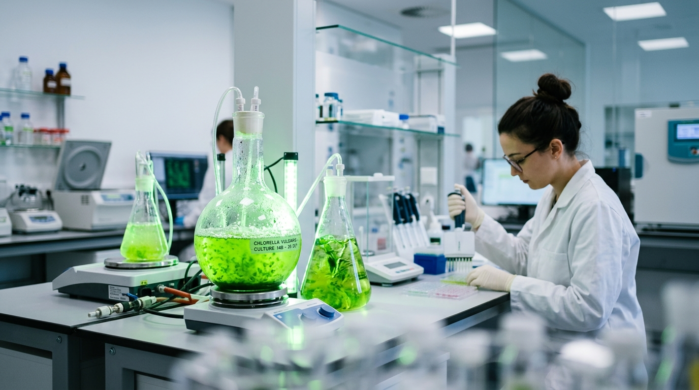

Parcerias Científicas
Colaboramos com as principais instituições de investigação europeias para reforçar o nosso pipeline de I&D.
O sucesso de qualquer empresa de biotecnologia com investimentos consideráveis em atividades de I&D, como é o caso da MadeBiotech, é fortemente dependente da qualidade da sua rede de contactos. A MadeBiotech trabalha diariamente para manter e aumentar as suas parcerias científicas e tecnológicas com as principais instituições internacionais e nacionais, tanto no setor público como no privado. Ao longo do tempo, esta estratégia tem-se mostrado altamente eficaz para todas as partes envolvidas, uma vez que tem permitido que todos os parceiros beneficiem das sinergias estabelecidas e do conjunto de conhecimentos reunidos, úteis para a formação de estudantes e de colaboradores, para a transferência de tecnologia e para que se alcance uma dimensão internacional.
Parceiros de Investigação & Tecnologia
Sete instituições, entre academia e indústria, que nos ajudam a expandir as fronteiras da ciência da biorrefinaria sustentável.

ITCC
Parceiro científico e tecnológico

TU Delft
Parceiro científico e tecnológico

Universidade da Madeira
Parceiro científico e tecnológico

IBB
Parceiro científico e tecnológico

Gensos
Parceiro científico e tecnológico

Wageningen University
Parceiro científico e tecnológico

IFT
Parceiro científico e tecnológico
Sobre a MadeBiotech
Missão
A principal missão da MadeBiotech é o desenvolvimento e a promoção do conceito de biorrefinaria sustentável utilizando vários tipos de biomassa e tecnologias inovadoras e de baixo impacto ambiental.
Visão
É objetivo da MadeBiotech desenvolver produtos de marca própria, associando a marca Madeira, e que a MadeBiotech seja uma referência internacional de qualidade, de responsabilidade ambiental e de sucesso empresarial consequente.